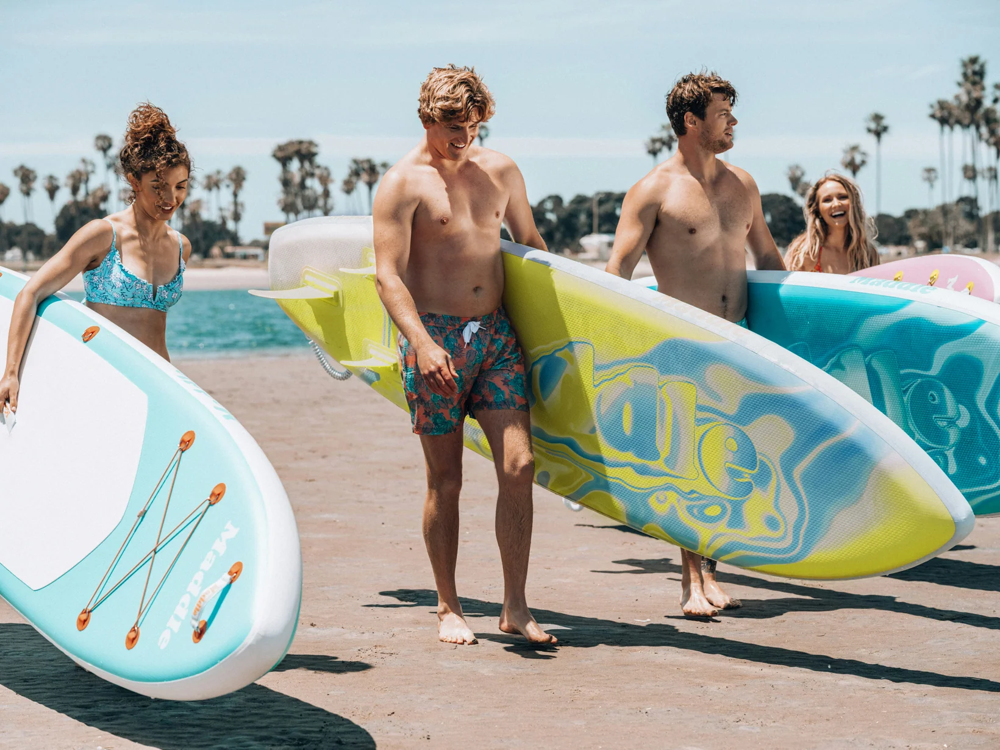
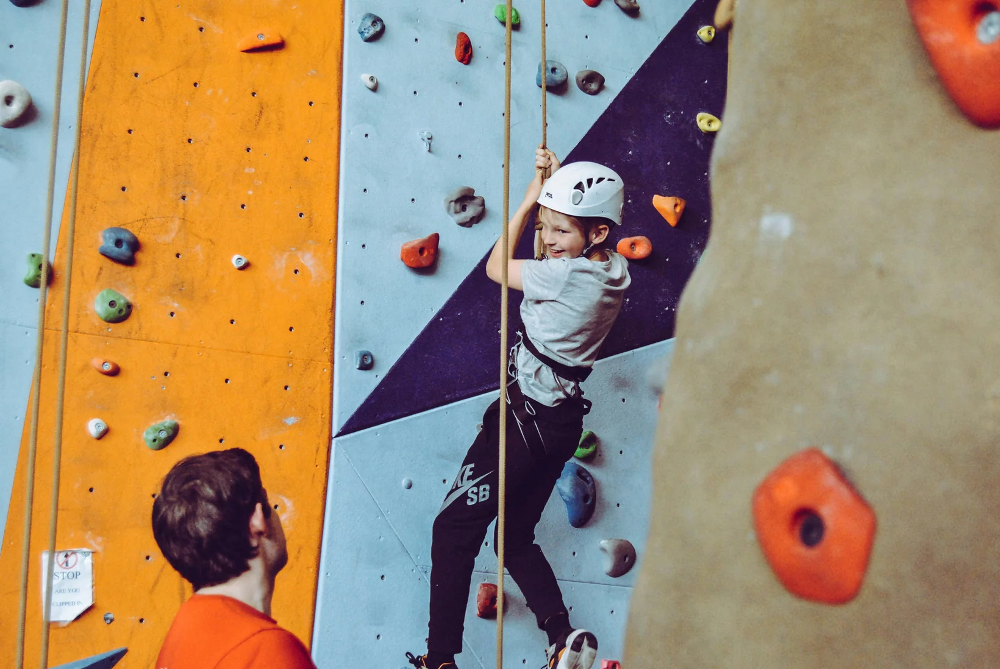
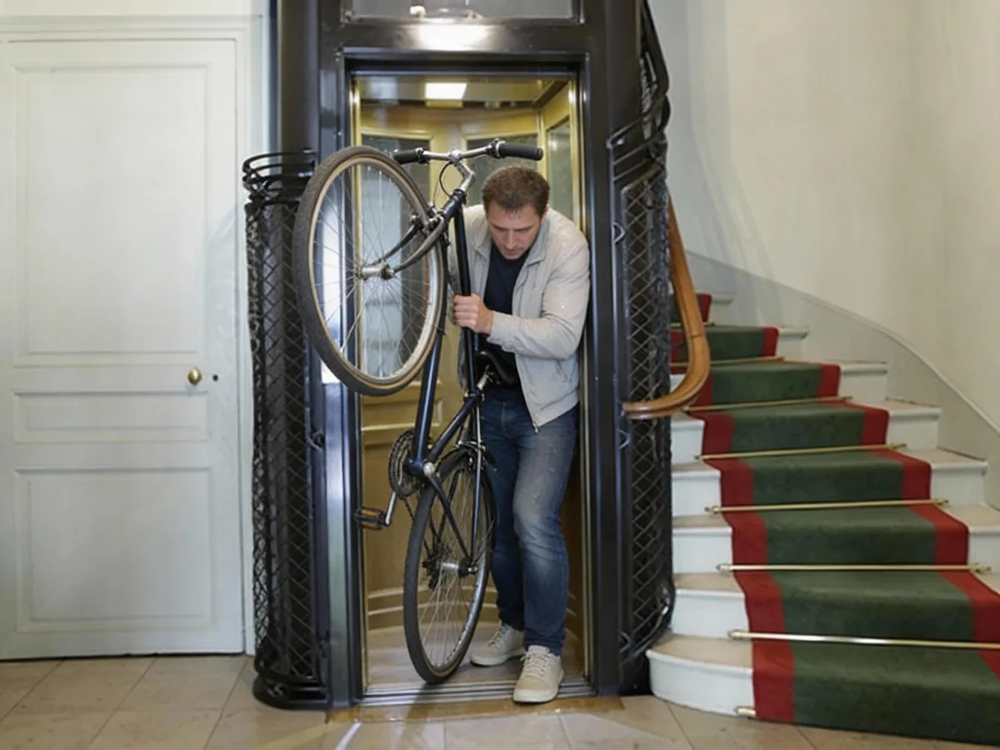
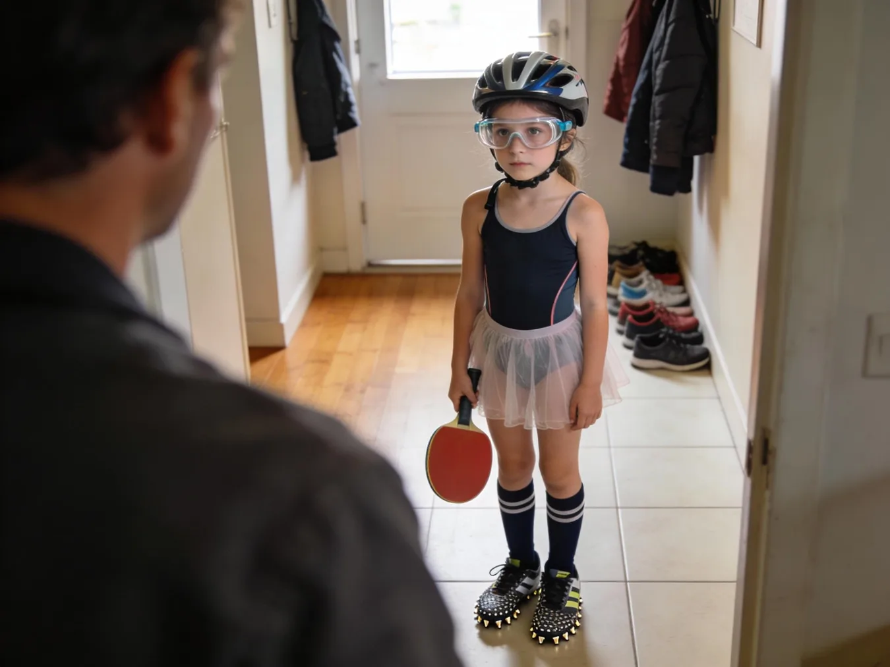
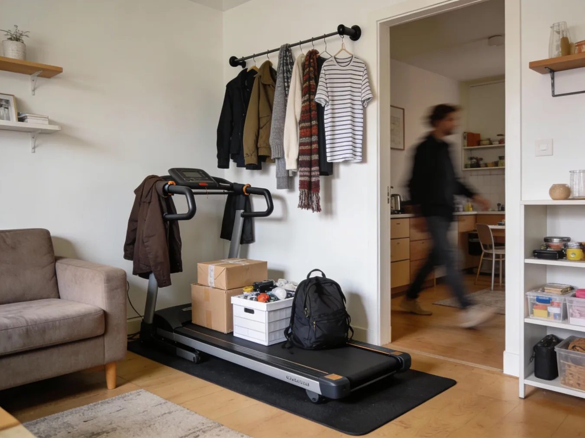
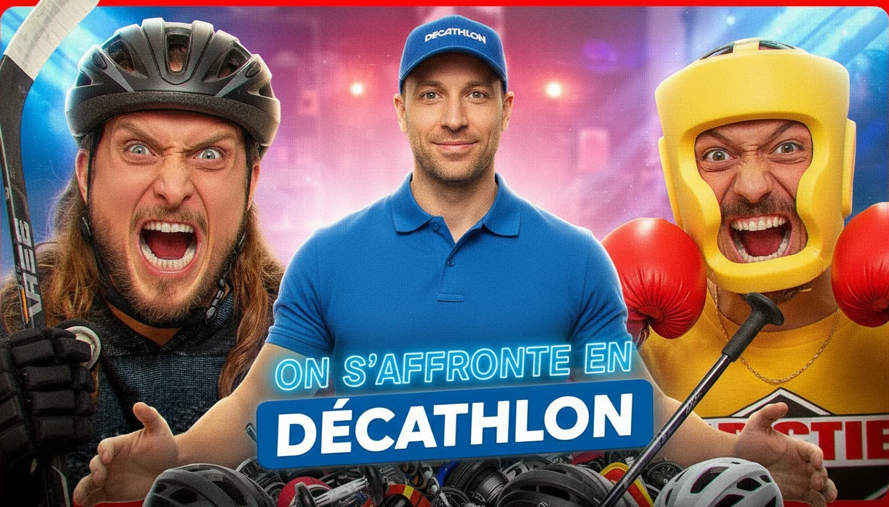
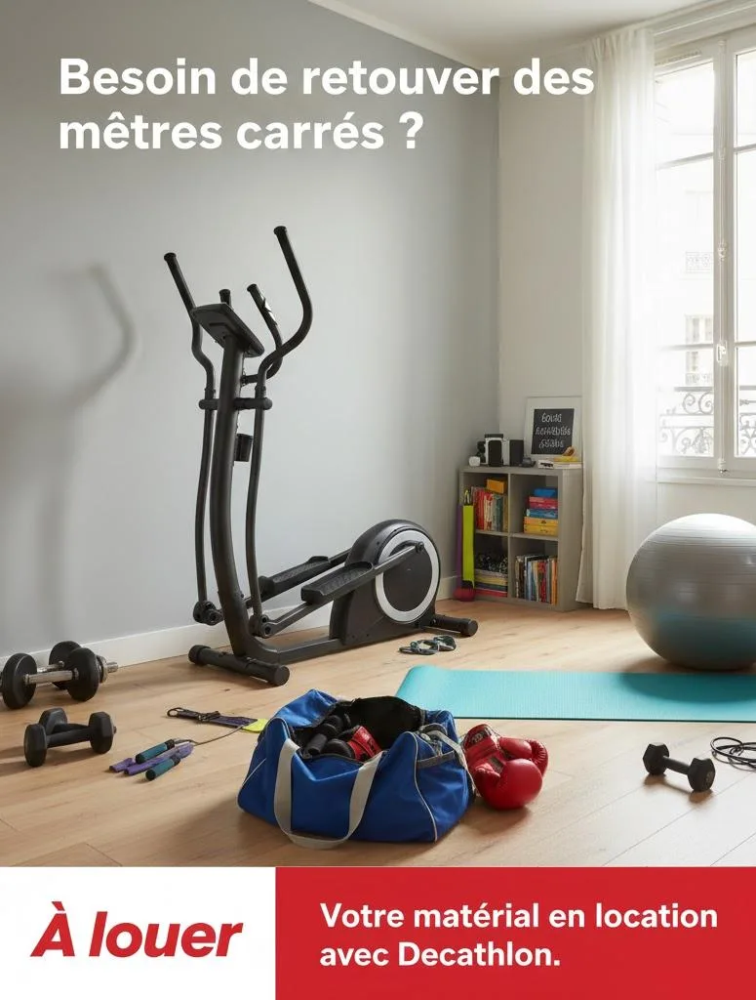
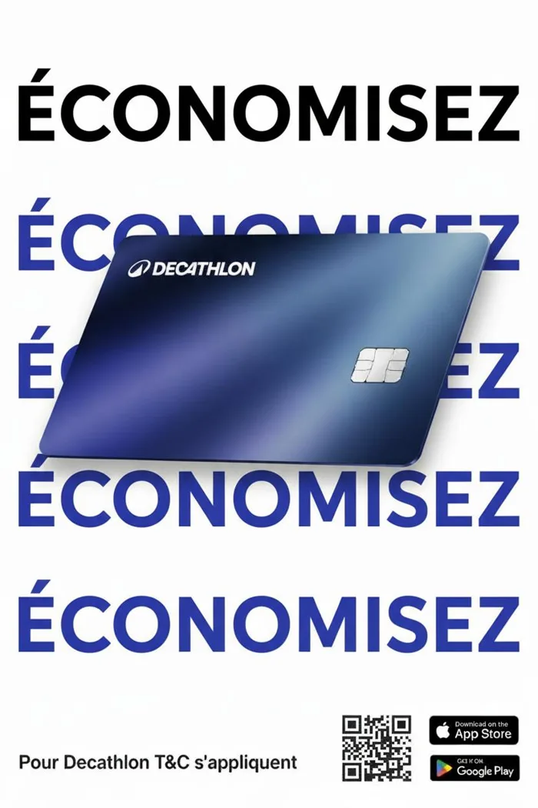
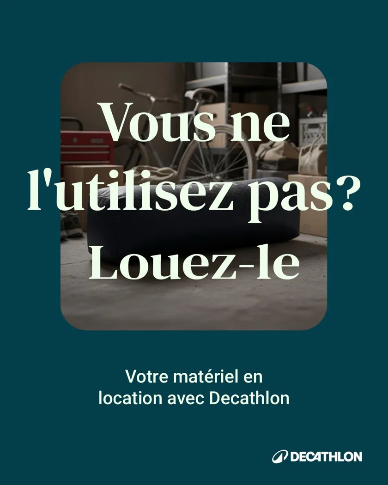

Studio Ludo.
Studio Ludo.
Étudiants et jeunes actifs
Un week-end sur l’eau donne envie de faire du kayak. Dans un petit appartement, où le ranger au retour ? Pour un usage ponctuel, louer préserve la place chez soi et le budget de la prochaine sortie.
Pour essayer un sport, le premier réflexe est souvent de s’équiper. Decathlon propose aussi de louer son matériel pour une sortie, un week-end ou une saison. Comment faire entrer cette possibilité dans les habitudes ?

Big Idea
Louer donne le temps de découvrir un sport. Si la pratique s’installe, l’achat prend tout son sens. Et le matériel d’un premier essai peut encore servir à quelqu’un d’autre.
Signature de campagne
L’adopter, c’est l’essayer d’abord.
Les publics

Un week-end sur l’eau donne envie de faire du kayak. Dans un petit appartement, où le ranger au retour ? Pour un usage ponctuel, louer préserve la place chez soi et le budget de la prochaine sortie.

Un enfant veut essayer le tennis après une saison de foot. La location permet de suivre cet enthousiasme, de choisir une taille adaptée et de reporter l’achat jusqu’au moment où la pratique se confirme.
Applications · Affichage et vidéo
L’affiche fait saisir le problème en un regard. La capsule montre comment il s’installe dans le quotidien.

Affiche
Un couple regarde la télévision depuis son kayak. Le bateau a servi quelques heures cet été. Dans leur salon, il occupe deux places toute l’année.

Concept vidéo
Deux chronos accompagnent le cycliste. Le premier s’arrête devant son immeuble. Le second tourne encore dans l’escalier, devant l’ascenseur, puis au détour du couloir. Le rangement devient la véritable épreuve.

Affiche
Le sentier est sec, les autres marcheurs sont en chaussures d’été. Lui a consacré son budget à sa dernière passion. Une paire inadaptée suffit à raconter deux saisons de dépenses.

Concept vidéo
Une enfant change de sport et son père repasse en caisse. Le montage saute d’une discipline à l’autre, le compteur en euros continue de grimper. À la fin, sa tenue mélange tous les sports qu’elle voulait essayer.

Affiche
Deux amies prennent un verre. On remarque ensuite le siège de l’une, un ballon de gym. Le matériel a trouvé sa place dans le salon avant que le sport trouve sa place dans la semaine.

Concept vidéo
Les jours défilent. Un vêtement puis un carton atterrissent sur le tapis neuf. Le compteur de pas reste à zéro. Le temps qui passe donne sa chute au film et sa raison d’être à la location.
Activation · Branded content

Concept YouTube · McFly et Carlito
Je propose au duo de se mesurer à dix disciplines dans un seul épisode. À chaque changement de sport, un conseiller Decathlon les aide à choisir leur équipement. Le plaisir du défi fait regarder le film. Les changements de matériel font comprendre le service.
Un épisode réunit le défi complet. Chaque épreuve fournit aussi une capsule autonome pour les réseaux sociaux, avec une entrée directe vers la location du sport correspondant.
Activation · Détournements publicitaires
Après la démonstration en vidéo, trois détournements empruntent des codes connus pour rendre tangible un bénéfice de la location.

Immobilier
Une annonce aux codes immobiliers fait lire le matériel inutilisé comme une surface perdue. La même pièce semble plus grande quand le matériel circule.
Référence créative · SeLoger

Finance
Le vocabulaire visuel de la finance invite à regarder le coût réel d’une pratique occasionnelle. Le bénéfice devient lisible dans le langage des économies.
Référence créative · Revolut

Seconde main
Le réflexe de trier son équipement devient une invitation à le proposer à d’autres sportifs. Le propriétaire conserve son matériel et peut en amortir l’achat.
Référence créative · Vinted